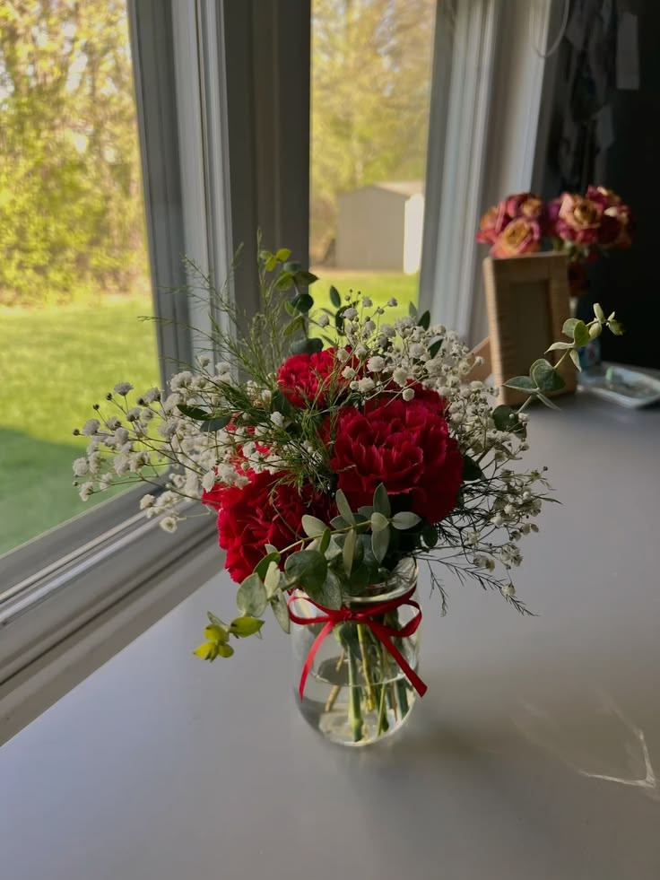

Simbol klasik dari cinta sejati, gairah, dan rasa kagum yang mendalam. Memberikan mawar merah adalah cara terindah untuk bilang, "Aku sangat mencintaimu di setiap detak jantungku."
Bunga-bunga kecil putih yang melambangkan cinta abadi, ketulusan, dan kemurnian hati. Kehadirannya melambangkan rasa syukur atas ketenangan yang selalu kamu bawa di hidupku.
Daun hijau pelengkap yang melambangkan perlindungan, kedamaian, dan kekuatan untuk terus bertumbuh bersama menghadapi segala musim kehidupan.